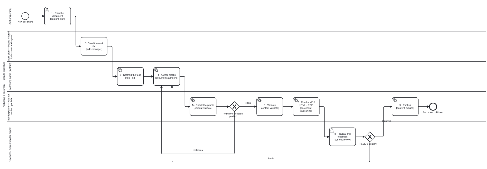

Writing a document with folio-assistant
Policy guidance, a standard, a report, a handbook — structured prose, authored with an LLM, published without a TeX installation.
- What a document folio is
- 1 · Scaffold the folio
- 2 · The content model
- 3 · Author with the agent
- 4 · Validate
- 5 · Render
- Moving between content types
- Where things are
What a document folio is
Everything a paper folio is, minus the formal layer. The same tree of chapters
and sections over typed blocks, the same editorial uses[] graph, the same
QA sidecars, the same HCI validation gate, the same publication pipeline.
What it does not have is the seven block kinds whose assertion is a formal mathematical claim — and therefore neither of the two toolchains that serve them. No Lean. No LaTeX.
A paper is a document plus Lean-bearing blocks. That is not a metaphor:
PaperContentAdapterextendsDocumentContentAdapterin code, and adds the Lean lifecycle and the LaTeX renderer on top. If you find yourself wanting a feature “the paper adapter has”, check first — you probably already have it.

1 · Scaffold the folio
In a new, empty repository:
git init
git submodule add https://github.com/litlfred/folio-assistant.git folio-assistant
(cd folio-assistant && bun install)
bun run folio-assistant/scripts/init-folio.ts \
--type document \
--title "Cold Chain Guidance" \
--author "A. Author"
Or, if your agent already has a folio-assistant server connected, ask it:
initialize a new document folio here using litlfred/folio-assistant, titled “Cold Chain Guidance”, author A. Author
Either way you get content/, uploads/, library/, the manifests for one
document with one chapter and one block, folio.config.json, the builder shim,
AGENTS.md with CLAUDE.md / GEMINI.md stubs, .mcp.json, and the beans
work plan. See the
README quickstart
for the full file list.
The starter block is a placeholder that says so. Replace it.
2 · The content model
content/cold-chain-guidance/
cold-chain-guidance.ts the document manifest — chapters, in reading order
introduction/
introduction.ts the chapter manifest — sections, in reading order
overview.ts a block manifest: kind, label, title, uses[]
overview.md that block's prose
overview.qa.json QA sidecar — machine-written, never hand-edited
Three ordered lists hold the whole structure, and a block reaches the output
only if some section’s blocks[] names it. This is the single most common way
authored work disappears: the .ts and .md are written, committed and
reviewed, and the block renders nowhere because nothing lists it.
The kinds you may use
prose, example, remark, algorithm, simulator, equation, diagram,
table.
Not definition, theorem, lemma, proposition, corollary, conjecture
or proof. content_profile_check rejects them, and runs on every
content_validate — so the failure arrives while you are writing rather than
when you try to publish.
uses[] matters more here than in a paper
uses[] lists the blocks a reader must already have read to follow this
one. It is an editorial judgement — nothing derives it, and nothing should.
In a paper folio there is a second, machine-derived dependency graph beside it
(from lean.ref). In a document folio there is not. So uses[] is the only
dependency signal the corpus carries, and every ordering metric, every “what
else changes if this changes?” question, and the reading-order review all read
it. List direct neighbours only.
3 · Author with the agent
Ask in plain language. The agent loads the skills it needs over MCP.
add a chapter on cold-chain monitoring
document-structure — creates the directory, writes the chapter manifest, adds
the entry to chapters[] in the right position.
add a section on temperature excursions, with a recommendation that facilities audit the cold chain quarterly
document-authoring for the section and its blocks; normative-statements for
the recommendation.
what does the audit recommendation depend on?
Reads uses[] and the content graph.
Carrying a recommendation
A normative statement is the block readers cite and implementers trace to. It wants a label, a stable identity and a place in the dependency graph.
There is no first-class recommendation block kind yet. The carrier today
is a prose block with a label and a title:
export default prose({
label: "rec:cold-chain-audit",
title: "Audit the cold chain quarterly",
uses: ["rec:scope", "prose:cold-chain-terms"],
});
Rules that make this work rather than merely compile:
- One statement per block. A block holding three cannot be cited, reviewed, superseded or traced individually.
- State the strength in the prose (must, should, the issuing body’s own grading). Nothing in the block structure encodes it.
- Keep the published number out of the label. Numbers are renumbered between editions; the label has to survive that. Put it in the title.
- Do not use
definition. Itsleanfield is required, so it will not validate here at all. Earlier guidance indocument-intakesuggested that mapping — it predates this content type.
The full convention, and what it is missing, is in the
normative-statements
skill.
4 · Validate
content_validate schema + constraints + profile conformance
content_profile_check profile conformance alone, over the whole folio
qa_sweep the QA axes, per block
Profile conformance is the check a paper folio does not have. It catches two
things schema validation structurally cannot, because a theorem is a valid
theorem whatever folio it sits in:
- a block whose kind is outside the declared profile; and
- a
leanfield or a.leansibling on a kind the profile otherwise allows —remark,example,algorithmandsimulatorall declare an optionallean, so the type permits what the profile forbids.
Both name the file and the remedy, including “declare contentType: "paper"”
when that is what you actually meant.
5 · Render
content/** → document_render_md → build/<slug>.md
→ document_render_html → build/<slug>.html
→ document_render_pdf → build/<slug>.pdf
Read the Markdown first. It is the only place the whole document appears in
reading order in one file, and ordering problems are invisible block-by-block.
Look for sections that came out empty, blocks in an order that does not read,
and the > **Missing block:** marker.
HTML needs only pandoc. PDF additionally needs one TeX-free engine —
weasyprint (recommended), prince, or wkhtmltopdf:
apt install pandoc
pip install weasyprint
If none is installed, document_render_pdf says which are missing and stops.
It does not fall back to latexmk, even where TeX is present: a PDF that
silently came out of LaTeX would misreport what the folio needs to build, and
the next person on a clean machine pays for that.
Both renderers take a css path relative to the repo root. Keep the stylesheet
in the folio — a house style is content — and put the print rules (@page,
page breaks, running heads) in the same file as the screen rules, so the two
outputs cannot drift.
Not implemented
No citations, no bibliography, no glossary, no automatic cross-reference
numbering. \cite{…} passes through verbatim, visible in the output rather
than silently dropped, so a folio that needs references today should write them
as Markdown links or footnotes.
Cross-references do work: every labelled block emits an HTML anchor, so
[see the scope statement](#rec:scope) resolves in both HTML and PDF. Use the
block’s label, never a heading-derived anchor — the heading anchor changes
whenever the title is edited, which is exactly when the link most needs to keep
working.
Moving between content types
folio.config.json’s contentType is the switch.
document → paper is a one-line change. You are adding toolchains, not removing content.
paper → document additionally means removing every math block and every
lean field. Run content_profile_check after flipping the switch and it
lists exactly what is in the way.
Where things are
| Skills | document-authoring · document-structure · normative-statements · document-publishing |
| Typed contracts | schema reference |
| Skill package | skills/authoring-document/package-manifest.json |
| Adapter | adapters/document/ |
| Vocabulary | schemas/block-kinds.ts — DOCUMENT_BLOCK_KINDS, MATH_BLOCK_KINDS |
| Process | authoring-a-document.bpmn |